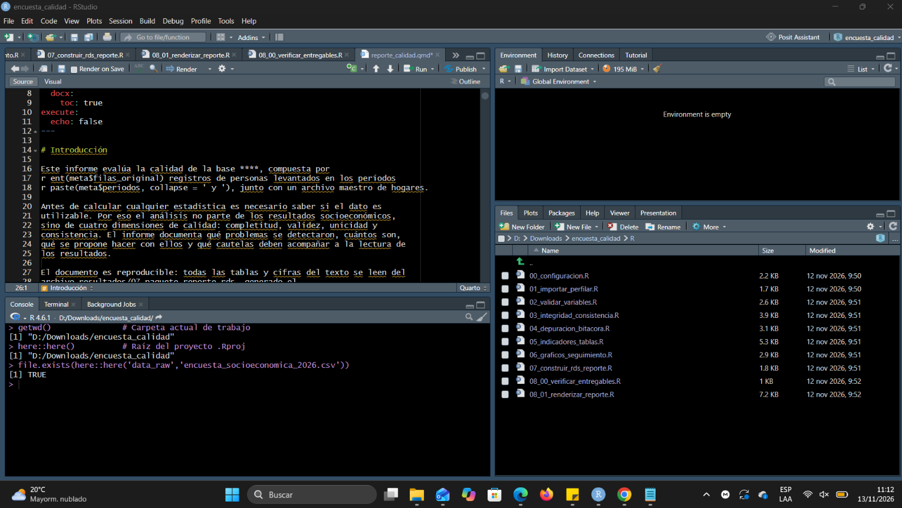
Informe técnico de calidad de datos
Introducción
Este informe evalúa la calidad del conjunto de datos: encuesta socioeconómica y archivo maestro de hogares identificados en las siguientes bases de datos: data_raw/encuesta_socioeconomica_2026.csv y data_raw/hogares_sinteticos_2026.csv
El análisis no parte de los resultados socioeconómicos, sino de cuatro dimensiones de calidad: completitud, validez, unicidad y consistencia. El informe documenta qué problemas se detectaron, cuántos son, qué se propone hacer con ellos y qué cautelas deben acompañar a la lectura de los resultados. Ningún dato de esta simulación procede de levantamientos reales del INEC.
Objetivos
Objetivo general. Diagnosticar la calidad de los datos de la encuesta socioeconómica sintética 2026 y documentar, con trazabilidad, las alertas detectadas y las correcciones propuestas.
Objetivos específicos.
- Importar los archivos sin alterar la fuente y perfilar sus variables.
- Aplicar reglas de obligatoriedad, dominio, rango y formato a nivel de variable.
- Verificar la unicidad de identificadores, la correspondencia persona–hogar y la coherencia lógica entre campos.
- Proponer una normalización controlada de etiquetas, registrada en una bitácora y sin aprobarla.
- Calcular indicadores de calidad con numerador y denominador explícitos, y compararlos entre escenarios y entre períodos.
- Comunicar los resultados en un reporte reproducible.
Metodología
Flujo de trabajo
El proyecto se organiza en etapas encadenadas; cada una guarda un entregable que la siguiente lee, de modo que ningún resultado depende de objetos sueltos en la sesión de R.
| Etapa | Qué hace | Entregable |
|---|---|---|
| 0 | Configuración, rutas y funciones comunes | R/00_configuracion.R |
| 1 | Importación conservadora (todo como texto) y perfilado | 01_diagnostico_variables.csv, 01_datos.rds |
| 2 | Reglas por variable (V01–V10) | 02_alertas_variables.csv |
| 3 | Unicidad, referencias y reglas lógicas (I01–I10) | 03_alertas_integridad.csv, 03_huerfanos.csv |
| 4 | Normalización propuesta y ensayo de imputación | 04_bitacora_propuesta.csv |
| 5 | Indicadores y tablas resumen | 05_*.csv, 05_tablas.rds |
| 6 | Gráficos | cinco PNG en resultados/figuras/ |
| 7 | Paquete de reporte | 07_paquete_reporte.rds |
| 8 | Auditoría de entregables y render de Quarto | reportes/reporte_calidad.html |
Evidencias:
Evidencia E0:
captura del proyecto abierto, resultado de here::here() y comprobación TRUE del CSV.
Evidencia 01:
resultados/tablas/01_diagnostico_variables.csv y resultados/01_datos.rds. Abra el CSV y explique cuáles variables requieren prioridad de revisión
[1] "variable" "n_ausentes" "n_distintos" "pct_ausentes"| variable | n_ausentes | n_distintos | pct_ausentes |
|---|---|---|---|
| id_encuesta | 0 | 2400 | 0.00 |
| id_persona | 0 | 2382 | 0.00 |
| id_hogar | 5 | 801 | 0.21 |
| periodo_referencia | 0 | 2 | 0.00 |
| fecha_entrevista | 0 | 58 | 0.00 |
| provincia | 0 | 7 | 0.00 |
| zona | 0 | 4 | 0.00 |
| edad | 12 | 68 | 0.50 |
| sexo | 0 | 2 | 0.00 |
| nivel_educacion | 10 | 7 | 0.42 |
| anios_escolaridad | 0 | 14 | 0.00 |
| condicion_actividad | 0 | 3 | 0.00 |
| horas_trabajo_semana | 0 | 39 | 0.00 |
| ingreso_mensual_usd | 24 | 2296 | 1.00 |
| fuente_ingreso | 0 | 4 | 0.00 |
| acceso_internet | 0 | 2 | 0.00 |
| acceso_computador | 0 | 2 | 0.00 |
| tipo_vivienda | 0 | 3 | 0.00 |
| miembros_hogar | 0 | 8 | 0.00 |
| ingreso_hogar_mensual_usd | 0 | 798 | 0.00 |
| ingreso_per_capita_usd | 0 | 798 | 0.00 |
| pobreza_didactica | 0 | 2 | 0.00 |
| acceso_agua | 0 | 2 | 0.00 |
| acceso_saneamiento | 0 | 2 | 0.00 |
Podemos observar que las variables: ingreso_mensual_usd, edad, nivel_educacion,id_hogar requieren prioridad alta de revisión, puesto que contienen valores ausentes, que requieren ser analizados.
Evidencia 02:
resultados/tablas/02_alertas_variables.csv; seleccionar tres reglas, identificar una fila por regla y explicar si corresponde a error confirmado, advertencia o ausencia.
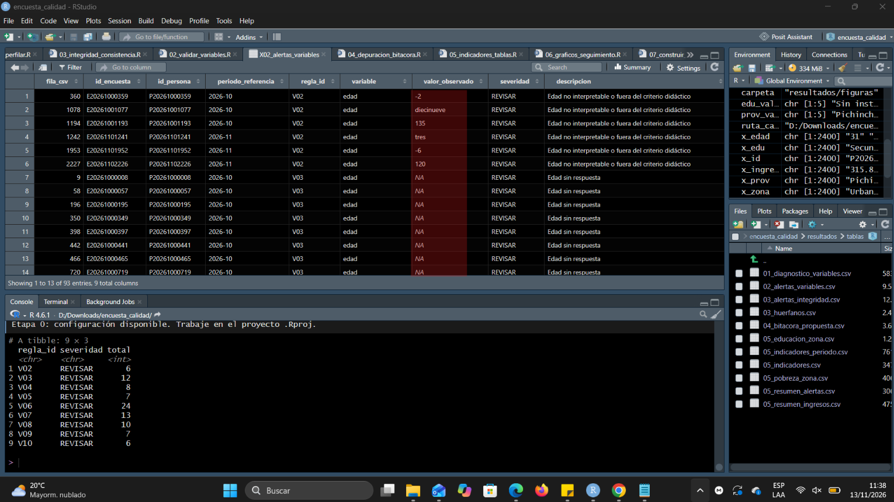
Se identificó un error confirmado en la fila 6, en la variable Edad, ya que registra un valor negativo. Dado que la edad no puede tomar valores menores a cero, este dato es inconsistente y se considera un error de registro.
Evidencia 03:
03_huerfanos.csv, 03_alertas_integridad.csv y explicación de un duplicado y una referencia sin correspondencia.
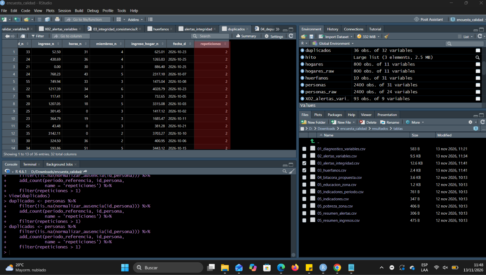
Se observa que las claves de id_personas se repiten durante 36 observaciones.
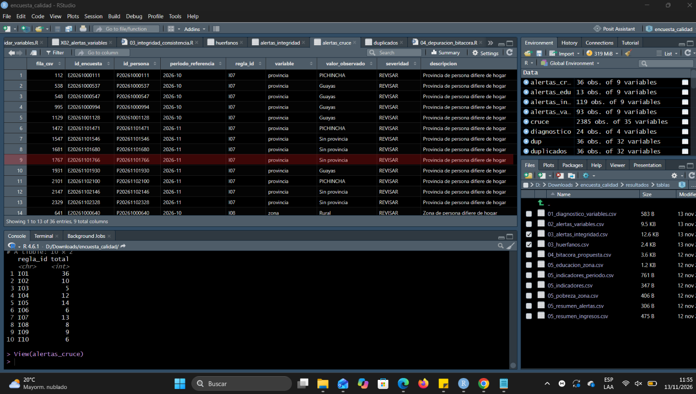
Se puede observar que en la fila nueve la variable provincia no cuenta con código asignado.
Evidencia 04:
resultados/tablas/04_bitacora_propuesta.csv y resultados/04_escenarios.rds. Compare tres normalizaciones y un caso que se mantiene pendiente de revisión.
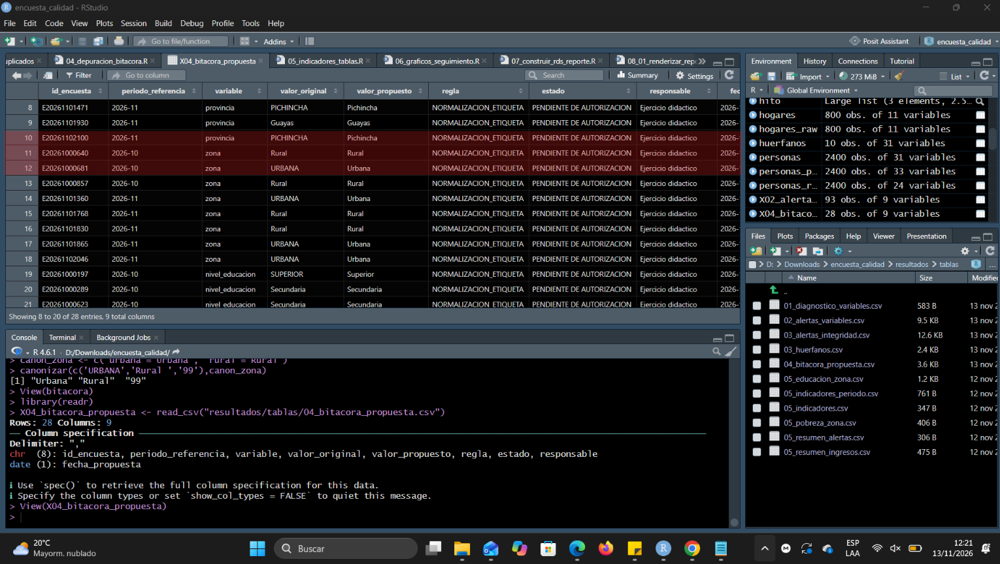
En las filas 10, 11 y 12 se normalizaron las etiquetas de las variables provincia y zona manteniendo una misma estructura de homologación.
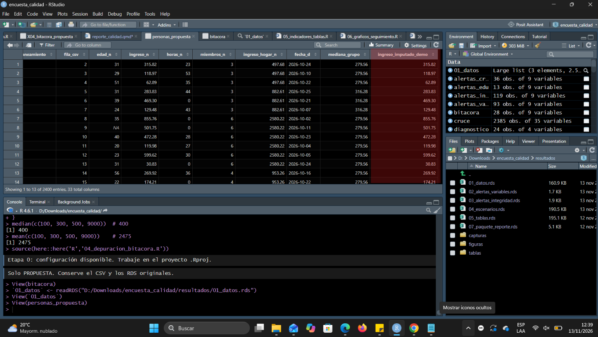
El ingreso mensual presenta una propuesta de imputación sin embargo esto no modifica la variable original ingreso_hogar_mensual_usd.
Evidencia 05 :
05_indicadores.csv, 05_indicadores_periodo.csv, 05_resumen_ingresos.csv, 05_educacion_zona.csv, 05_pobreza_zona.csv, 05_resumen_alertas.csv. Explique una diferencia en puntos porcentuales y compruebe el numerador/denominador de un indicador.
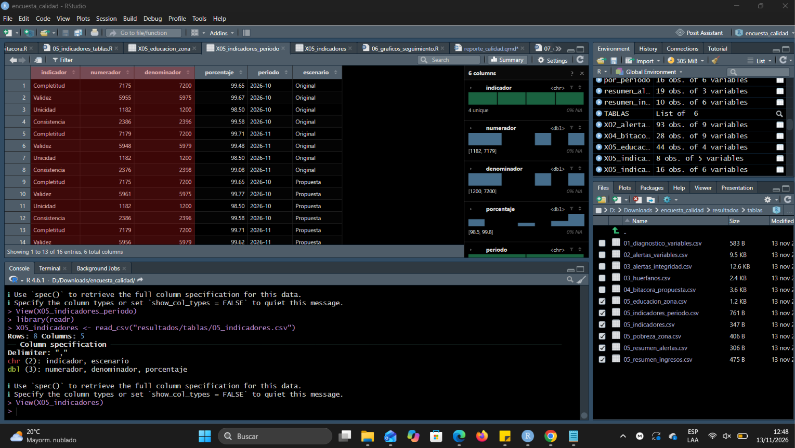
Completitud: el 99.65% de los valores requeridos se encuentran presentes para todas las filas en el periodo 2026-10. Validez: el 99.67% de los valores son aplicables en el periodo 2026-10. Unicidad: el 98.50% de las filas son únicas y no se duplican para el periodo 2026-10. Consistencia: el 99.58% emplean relaciones lógicas evaluadas que se cumplen en el periodo 2026-10.
La consistencia entre los periodos 2026-10 y 2026-11 se redujo en aproximadamente 0.5 puntos porcentuales lo que llevaría a analizar las relaciones lógicas que se aplican en cada periodo.
Evidencia 06:
cinco PNG en resultados/figuras/. Seleccione uno y explique el denominador, una conclusión que sí se justifica y una conclusión que sería indebida
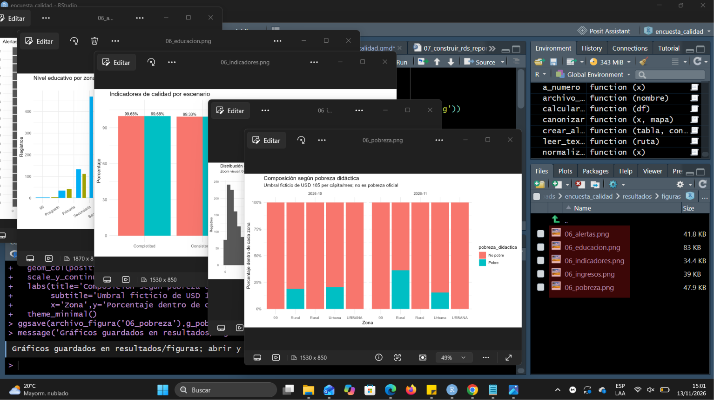
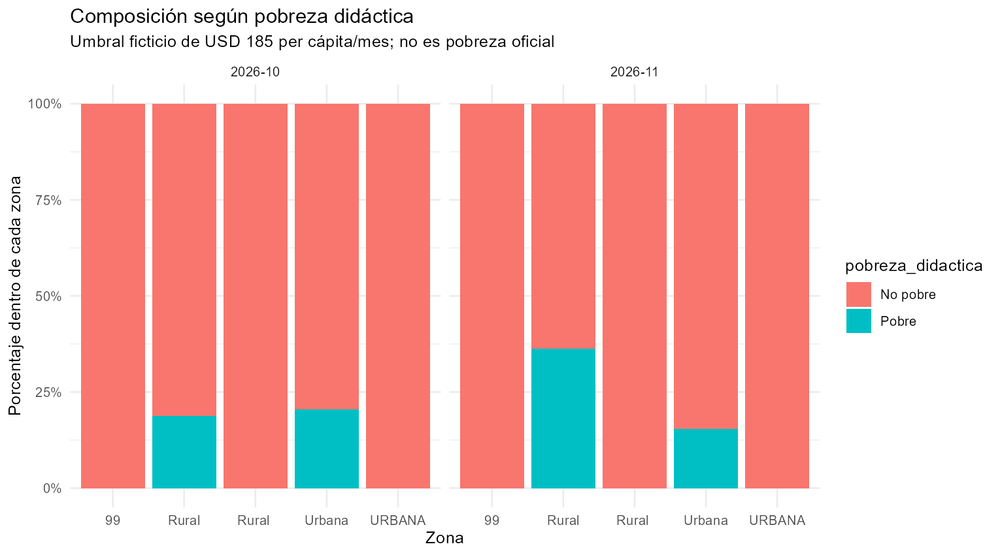
Para el periodo 2026-10 la pobreza en la zona urbana es de alredor del 20% mientras que para el periodo 2026-11 presenta valores de alredor del 14%. Se concluye que que la pobreza en la zona urbana tiene una tendencia a la baja. Afirmar que la pobreza que va a reducirse en el area en los siguientes periodos sería impreciso porque se requiere disponer de más información.
Evidencia 07:
archivo físico resultados/07_paquete_reporte.rds, captura de names(x) y comprobación de lectura. El RDS se genera al ejecutar esta etapa; no se entrega como producto terminado para evitar sustituir el aprendizaje.
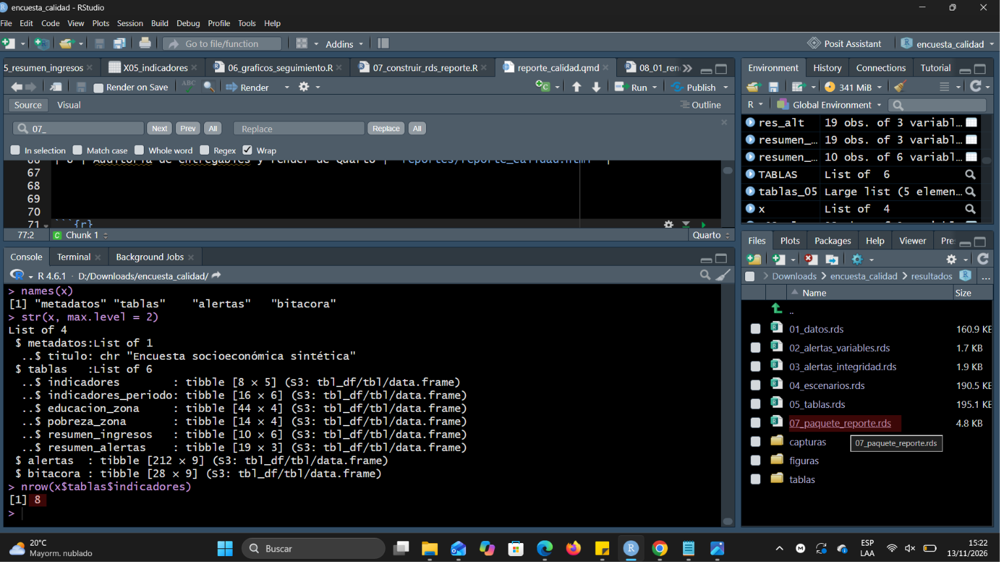
Evidencia 08:
HTML y DOCX (Word es opcional), más captura del informe con tabla y gráfico visibles. Validación: los resultados del HTML deben coincidir con las tablas del RDS, sin números redactados manualmente en el cuerpo del informe.
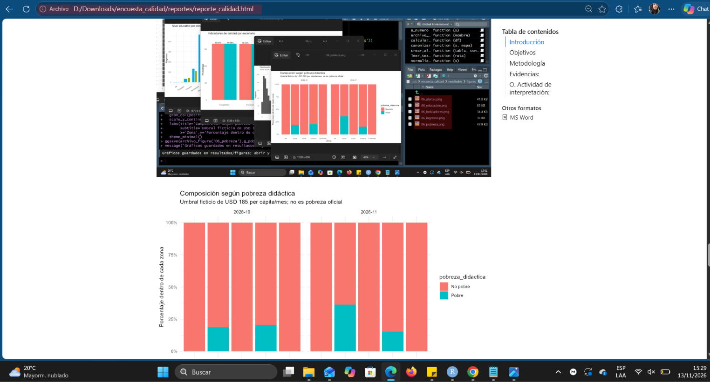
Evidencia 09:
**carpeta web/_site/ con index.html y metodologia.html, y captura de ambas páginas abiertas.**
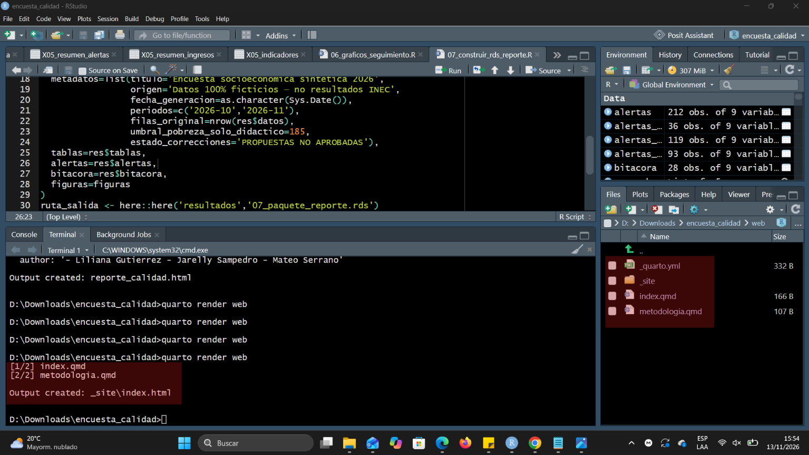
Actividad de interpretación:
1. ¿Por qué un dataset con pocas ausencias todavía puede tener problemas devalidez, unicidad e integridad? Porque la completitud solo mide si la celda tiene algo escrito, no si lo escrito es correcto. Una celda puede estar llena con una edad de 135 años, una zona 99, un identificador repetido o un hogar que no existe en el archivo maestro. Aquí la completitud es de r pct(‘Completitud’) % y aun así hay r ent(nrow(alertas)) alertas.
2. ¿Cómo distinguir una fila repetida de dos personas con un mismo identificador? Comparando el resto de los campos. Si todas las variables coinciden (hogar, edad, sexo, fecha de entrevista), probablemente es el mismo registro cargado dos veces. Si difieren, son dos personas a las que se asignó el mismo código. En ambos casos se usa id_encuesta y fila_csv, que no se repiten, para ubicar cada fila, y la decisión final requiere verificar con la fuente o el operativo de campo.
3. ¿Qué significa un id_hogar sin correspondencia y por qué no debe eliminarse sin investigación? Significa que la persona declara un hogar que no aparece en el archivo de hogares para ese período (registro “huérfano”). El error puede estar en cualquiera de los dos lados: un código mal digitado en la persona o un hogar que falta en el maestro. Eliminar el registro borraría a una persona posiblemente válida, sesgaría los resultados y destruiría la evidencia necesaria para hallar la causa.
4. ¿Qué diferencia existe entre media y mediana ante un ingreso extremo alto? La media se desplaza hacia el valor extremo; la mediana casi no cambia. Con los ingresos 100, 300, 500 y 9.000, la media es 2.475 y la mediana 400. Por eso la mediana resume mejor el ingreso típico en distribuciones asimétricas.
5. ¿Cuál es la diferencia entre corrección propuesta y corrección aprobada? La propuesta es una sugerencia documentada (valor original, valor propuesto, regla, responsable y fecha) que no modifica la base de referencia. La aprobada es la que la persona responsable del dato autorizó y que recién entonces puede aplicarse. En este proyecto todas están en estado r unique(bitac$estado)[1].
6. ¿Qué indicador mejoró entre el escenario original y la propuesta? ¿Es correcto afirmar que mejoró la estadística oficial? Mejoró solo la validez, de r pct(‘Validez’) % a r pct(‘Validez’, ‘Propuesta’) %. No es correcto afirmar que mejoró la estadística oficial: los datos son ficticios, la corrección no está aprobada y lo único que cambió fue la escritura de algunas etiquetas, no la información sobre las personas.
7. ¿Por qué saveRDS() es necesario antes de elaborar el reporte Quarto? Porque Quarto ejecuta el documento en una sesión nueva de R, que no ve los objetos del Environment. El RDS guarda las tablas con sus tipos de datos y sirve de interfaz entre el análisis y el reporte: el informe lee un único archivo verificado, no repite los cálculos y se puede regenerar siempre con el mismo resultado.
8. ¿Qué diferencia práctica existe entre generar un documento HTML y generar un sitio web de dos páginas? El documento HTML es un solo archivo, producido desde un .qmd, que se puede abrir o enviar directamente. El sitio web es un proyecto Quarto con un _quarto.yml, varias páginas enlazadas por un menú de navegación y una carpeta de salida (web/_site/) que debe publicarse completa, por ejemplo en GitHub Pages.
9. ¿Por qué los resultados desbalanceados no deben extrapolarse a Ecuador? Porque la muestra no fue diseñada para representar al país: no tiene factores de expansión, la zona urbana concentra alrededor del 80 % de los registros y solo incluye algunas provincias. Los porcentajes describen estos r ent(meta$filas_original) registros, no a la población ecuatoriana.
10. ¿Por qué la variable pobreza_didactica no equivale a pobreza monetaria oficial? Porque usa un umbral ficticio de r meta$umbral_pobreza_solo_didactico USD per cápita al mes, elegido para el ejercicio, y no la línea de pobreza oficial ni su metodología (construcción del ingreso del hogar, actualización de la línea, diseño muestral). Además se calcula sobre datos sintéticos con errores de ingreso sin resolver.